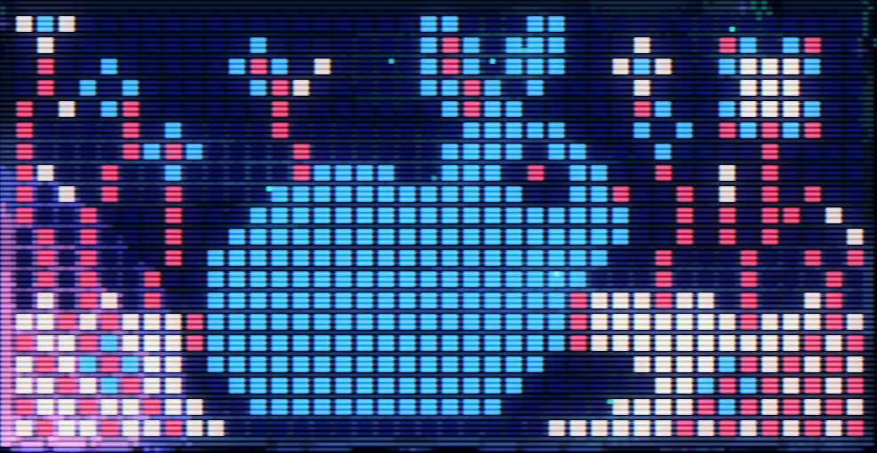
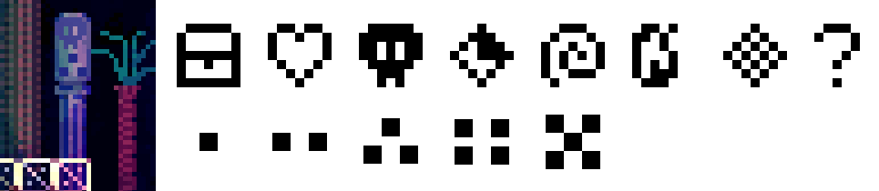

16 Rabbits. 16只兔子
收集16只兔子，竖井顶部的圆环传送到兔子空间，可以找到它们，获得通向神秘地区的线索。
你可以:
单击按钮显示/隐藏所有兔子，或者
单击图片里的兔子，然后跳转到地图的对应位置。
一些兔子需要解谜才能找到，如果你找不到线索，可以参考本页下方的提示。
Enjoy it!
如果你需要线索，可以单击这个按钮查看：
1.像素兔：在左边的显示屏下的地面使用陀螺挖地，出现的通道里有个画像碎片。这样的碎片共有50个，因此需要社区多人合作才能完成。50个碎片组合是一幅兔子画像：
用下方的像素控制器（空蓝红白）按照上面的图片改变显示屏的画面，右边的门会打开。
2.藤条兔：此房间左边的房间，上面的藤条可以拨开，墙上有密码。按照它吹笛子可传送到此处。
3.初始兔：出生点不远就会遇到，可以从左边泡泡跳上去。
4.地图数字兔：地图上有些房间有特殊图案的柱子，如下图所示：第一行是不同的图案，第二行表示这个柱子的次序。在地图上把相同的图案的柱子按次序连起来，会形成一些数字， 按照数字吹笛子（拿笛子房间的墙上有数字提示，开灯比较容易看到）会传送到隐藏房间。
5.UV紫外兔：得到UV紫外灯后， 在四火存档点附近的空间开灯，会看到随机出现的发光的兔子。
6.鱼兔：上方的房间墙上有表示方向的三角形，开UV灯才能看到。按照箭头方向吹笛子，会打开右下的暗道。
7.鬼脸兔：该处的鬼魂脸会不断变化。通关房间的上方左边的隐藏房间里有脸的指示。按照脸的顺序吹笛子。
8.刺兔：下面的存档点飞盘跳过水面到达左边，然后在方块上往右跳踩飞盘，到达右边有2只剑鱼画像的房间中间时，往右上跳，可以上去。上面的针刺可以用连续踩飞盘通过。
9.鸭子兔：地图右上角最远的有龙猫的房间，墙上有脸的符号，通关隐藏房间有图示，然后来到四火存档点右边，有鸭子的地方，按脸吹笛子。
10.梦兔：在任意可以跳高的地方（或者自己用泡泡跳），静止不动，等一会儿会出现空心的兔子图案，跳上去触碰。
11.存档兔：该房间下方的房间墙上有4个图案，是三个存档的图标。不同的存档起始画面的花苞周围的闪光飞向不同方向，组合起来构成密码，按密码吹笛子。
12.不落地兔：该房间的墙壁只能从其他房间打开，墙后有隐藏空间可以进入。需要利用游戏的不落地入水会返回原处的机制。方法一：从该房间右上角的打开的墙后开始，泡泡跳 向左走（扔陀螺引狗或者直接踩飞盘过，左边的房间可能有袋鼠，提前用鞭炮驱赶），到达有一条狗的房间上升，然后在熊头传送点处继续上升，到达上方空间用遥控器，然后下降，掉入熊头右侧 房间的水里。 方法二：在右上角打开的墙后向左泡泡跳，然后用飞盘在垂下的石头上反弹，站上去进入右侧房间。跳下来落到可开关的地板上（不算落地），然后继续用飞盘向右结合遥控器 跳到最上层，然后一边泡泡跳一边用遥控器开墙，可以从右边出去（注意避开垂下的石头），然后跳到右边房间的水里。
13.电视兔：用遥控器变换电视上的表情。通关房间左边上方有隐藏空间，提示表情方向。按照提示方向吹笛子。
14.纸兔：通关后的办公室楼上有房间。收集64个蛋，打开UV灯，发现蛋上有横线。在获得笛子的房间查看墙上的提示，得到线的含义是不同数字。每个蛋的数字表示一个方向。 在蛋房间按照蛋的64个方向（有一个颠倒的）吹奏，会打开右上角的空间获得钥匙。进入办公室二层房间，如果玩家电脑有连接打印机，会打印兔子折纸，折纸上有提示密码。二层吹奏密码即可。（没有打印机 的话，可去左上角的熊头传送点下方的狗房间右侧，有袋鼠的房间，墙上的草是条形码，扫描获得密码，可打开密室）
15.狗兔：该房间有个长耳朵狗的雕像，把神社的狗幽灵引来，让它碰到雕像，会变成兔子。
16.乌鸦兔：该房间有9只乌鸦，按不同方向叫，跟着方向吹笛子，可以打开左上的隐藏空间。
找到所有兔子后，根据办公室二楼的黑板提示，查看兔子耳朵的变化，解谜可以到达巨兔房间。被它吃下去获得飞行能力。
如果你需要密码，可以单击这个按钮查看：
你可以查看网上的文章，例如 b站 YasuotheHornet 的文章获得解谜的细节。
2.藤条兔密码：→↗→↓→↙↙→ （传送到地图最右侧）
4.地图数字兔：↖↑↘↓↙↓←↓ （传送到地图右侧中上）
6.鱼兔：←←↘→↗←←↗
7.鬼脸兔：←↖↑↗→↘↓↙
9.鸭子兔：↑↓↑↓←→←→
11.存档兔：→↓←↑ →↓↖↗ →↓←↑ ↘↙↖↗ （传送到初始区域）
13.电视兔：↗↖↙↘↑←↓→
14.纸兔：→↗↑←↖↑←↓
办公室二层钥匙：蛋房间的64个蛋的密码： ↖↓→↓ ↖↓→↓ ↖↙↘↙ ↖↙↘↙ ↗←↓← ↗←↓← ↑←↘← ↑←↘← ↖↓→↓ ↖↓→↓ ↖↙↘↙ ↖↙↘↙ ↖↗↖↙ ↗↑←↓ ↑↖↙← ↑↖←↖
到达巨兔房间的密码：在兔子空间最右边，进入boss口中，然后按方向切屏： ↑←↑←↑→↑↑ ←↓←↑↑↑→→ ↓→↑↑↑←↓← ↑←↑→→→↑←
当完成一些几乎不可能的事件时，会得到乱码。根据办公室二楼的图案填写，可以得到一条路径，从巨兔房间左侧出发沿路径切屏，会到达一个岛，上面有作者录音。路径：←←↑←↓←↑← ↓↓→↓→↑→↓ ↓→↑→↓↓→↓ ←←↓←↑↑←←
其他密码：游戏中有提示，或者社区找出来的，可以传送。
传送到传送室里上方的平台（很容易发现）：→→←←↓↓↑↑
传送到四火存档点处：→↑↗↑↓←↙↓
传送到竖井顶部（打败第二个boss后兔子空间开UV灯看到）：↘↖↘↖↘↖↘↖
传送到传送室里下方右侧的隐藏房间：可以打开左边的墙，就是UV紫外灯隐藏空间的右侧，这是拿紫外灯的捷径。→↑←↓←↓←↓